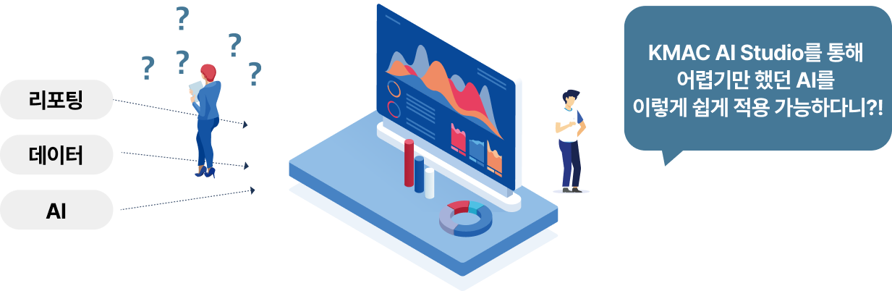
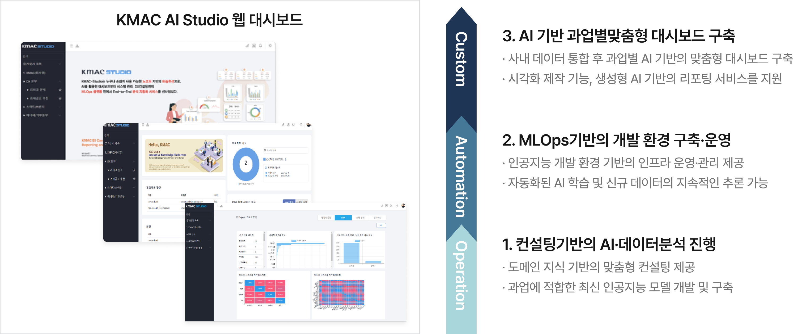

Home / 서비스 / AI-Studio
KMAC AI-Studio
KMAC AI-Studio는 시스템 모니터링의 효율성을 높이고 경영진과 실무진의 보다 빠르고 정확한
의사결정을 지원하는 MLOps기반의 AI 데이터 분석 및 시각화 솔루션입니다.
KMAC AI Studio 도입의 필요성
기업·기관에서 AI를 손쉽게 업무에 적용하고 결과를 해석하여 비즈니스 성과를 극대화할 수 있는 사용자 기반의 모니터링 솔루션을 제공합니다.

기업·기관 내 도메인 전문가, PM (Project Manager), 컨설턴트, C-LEVEL 등
기업·기관 내 도메인 전문가, PM (Project Manager), 컨설턴트, C-LEVEL 등
KMAC AI Studio에서 제공하는 맞춤형 대시보드를 통해 지속적으로 시스템을 모니터링하고
효과적인 의사결정을 할 수 있습니다.
KMAC AI Studio란?
KMAC AI Studio는 30년간 축적 되어온 컨설팅 노하우 연계된 IT 프로젝트 레퍼런스를 기반으로 누구나 손쉽게 사용할 수 있는 컨설팅 기반의 차별화된 모니터링 솔루션을 제공합니다.

MLOps란?
Machine Learning Operations의 준말로, 기계학습모델(ML)의 생성부터 Ops 영역의 모델 배포, 운영, 서비스 등의 전체 과정을 자동화한 프로세스를 의미
KMAC AI Studio 구축 가능 유스케이스
KMAC AI Studio를 활용할 경우 다양한 도메인에서 발생되는 데이터를 분석하여 목적에 맞는
맞춤형 결과를 구현할 수 있습니다.
KMAC AI Studio
KMAC 컨설팅 지식과 모니터링 솔루션 연계를 통한 의사결정 효율화 가능
유스케이스
Key value
- 노코드 기반의 자동화 분석 플랫폼
-
노코드 기반의 자동화 분석 툴을
바탕으로 효과적인
플랫폼 운영 및 관리 가능
1. 운영 및 투자비용 절감
- Studio 활용 지원 서비스
-
시각화 제작 기능, 생성형 AI 기반의
챗봇 서비스 및 분석 결과 해석
리포팅 기능사용 가능
2. 사용자 경험 개선
- 컨설팅 기반의 모니터링 서비스
-
다양한도메인 대상의 AI 컨설팅
레퍼런스를 기반으로 심도 깊은 분석
인사이트 도출 가능